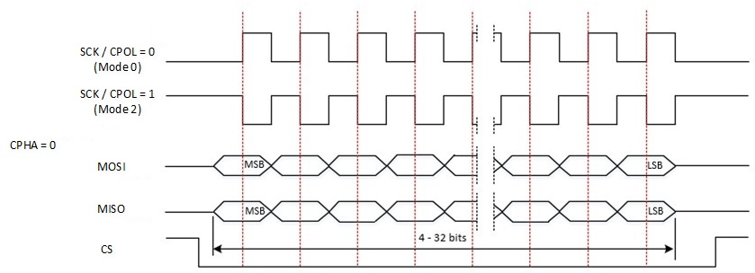

SPI
示例列表
本章介绍 SPI 示例的详细信息。RTL87x2G 为 SPI 外设提供以下示例。
功能概述
串行外设接口（SPI）允许与外部设备进行半/全双工、同步、串行通信。 该接口可以配置为两种操作模式之一：作为串行主设备或串行从设备。在主模式下，它为外部从设备提供通信时钟（SCK）。 对于RTL87x2G，SPI0 可以配置为主设备或从设备，SPI1 是主设备。
特性列表
SPI 主设备特性列表：
支持 4 种时钟模式。（CPOL, CPHA）
Mode 0 (CPOL=0, CPHA=0).
Mode 1 (CPOL=0, CPHA=1).
Mode 2 (CPOL=1, CPHA=0).
Mode 3 (CPOL=1, CPHA=1).
最大 SPI0 SCK 50MHz；最大 SPI1 SCK 20MHz。
SCK frequency= SPI source clock/N; N 是介于 2 和 65534 之间的任何偶数。
支持 4 到 32 位数据帧格式。
TX FIFO 深度 32。
RX FIFO 深度 32。
支持 GDMA。
SPI 从设备特性列表：
支持 4 种时钟模式。（CPOL, CPHA）
最大输入 SCK 为 20MHz。
支持 4/8/16 位数据帧格式。
TX FIFO 宽度 16 位，深度 64。
RX FIFO 宽度 16 位，深度 64。
支持 GDMA。
系统框图
SPI 的系统框图如下图所示。通过调用 MCU Firmware 固件实现 SPI TX/RX 等功能，硬件通过 MOSI 与 MISO 实现数据交互，实现与外部设备的通信。

SPI 系统框图
传输模式
SPI 支持四种传输模式：
全双工模式
在全双工模式下，数据的发送和接收逻辑均有效。因此在通信时需要注意数据发送与接收的逻辑。需要配置
SPI_InitTypeDef::SPI_Direction为SPI_Direction_FullDuplex。只发送模式
在只发送模式下，只有发送逻辑有效，接收的逻辑无效，接收到的数据不会存储在 RX FIFO 内。需要配置
SPI_InitTypeDef::SPI_Direction为SPI_Direction_TxOnly。只接收模式
在只接收模式下，只有接收逻辑有效，发送逻辑无效。需要配置
SPI_InitTypeDef::SPI_Direction为SPI_Direction_RxOnly。EEPROM 模式
EEPROM 模式通常用于向 EEPROM 设备发送 opcode 或 地址。在 EEPROM 模式下，SPI 先发送数据，直到 TX FIFO 为空后开始接收数据。在发送数据时，接收逻辑无效。在接收数据时，发送逻辑无效。需要配置
SPI_InitTypeDef::SPI_Direction为SPI_Direction_EEPROM。在 EEPROM 模式下，需要设定SPI_InitTypeDef::SPI_RXNDF值，确定需要接收的数据数量。
通信时序图
SPI 支持 4 种时钟模式，分别对应 CPOL 和 CPHA 为 0 和 1 的四种情况。
时钟极性（CPOL）位设置时钟信号在空闲状态下的极性。0 表示低电平，1 表示高电平。
时钟相位（CPHA）位设置捕获数据的边沿：0 表示第一边沿，1 表示第二边沿。
下图分别为四种模式下的 SPI 通信时序图。

SPI 通信时序图 (CPHA is 0)

SPI 通信时序图 (CPHA is 1)
SPI 从机
当初始化选择外设为 SPI0_SLAVE 时，会将 SPI 配置为从设备模式。当 SPI 被配置为从设备时，所有串行传输均由串行总线主设备启动和控制。
SPI 从机使用时需要注意以下几点：
CPHA 和 CPOL 必须与主设备设置相同。
如果 SPI 从设备向主设备传输数据，必须确保在串行主设备发起传输之前，TX FIFO 中存在数据。如果在从设备 TX FIFO 中没有数据的情况下主设备向 SPI 从设备发起传输，则 SPI 状态位
SPI_FLAG_TXE会被置起。在从设备发送最后一个数据帧后，TX FIFO 变为空，此时，SPI 主设备不应再发送时钟请求从设备的数据，因为从设备没有数据可以传输。如果此时主设备继续发送时钟，则会产生 TX FIFO 下溢，触发
SPI_INT_TUF中断。从设备会反复向主设备返回低电平。在设备以高速状态下运行时，建议使用 GDMA 传输。
SPI 高速模式
SPI0 支持高速模式。在 SPI 传输速率高于 20MHz 时，推荐使用 SPI0 的高速模式，同时推荐搭配 GDMA 进行使用。高速模式下，需要选择外设的基地址为 SPI0_HS。
在开启 SPI 高速模式下，推荐和专属 PAD 配套使用。部分 PAD 可以支持被配置为指定外设的高速模式，在使用专属 PAD 时，PAD 被固定分配为指定功能，无法进行更改。SPI0 的专属 PAD 如下：
PAD |
Function |
|---|---|
P4_0 |
SPI0_CLK |
P4_1 |
SPI0_MISO |
P4_2 |
SPI0_MOSI |
P4_3 |
SPI0_CSN |
在使用 SPI0 高速模式时，需要进行如下配置：
调用
Pad_Dedicated_Config()，开启指定 PAD 的专属模式。调用
Pinmux_HS_Config()，开启 SPI0 高速模式。需要额外配置 0x40002310 地址下寄存器的 BIT15 为 1，才可以正常使用高速模式。
在使用专属 PAD 时，无需执行
Pad_Config()与Pinmux_Config()。如果需要手动控制 CS 线，Pad_Dedicated_Config()函数可以不配置 CS 相关引脚，执行Pad_Config()即可。Pad_Dedicated_Config(SPI_SCK_PIN, ENABLE); Pad_Dedicated_Config(SPI_MOSI_PIN, ENABLE); Pad_Dedicated_Config(SPI_MISO_PIN, ENABLE); Pad_Dedicated_Config(SPI_CS_PIN, ENABLE); Pinmux_HS_Config(SPI0_HS_MUX); *((volatile uint32_t *)0x40002310) |= BIT15;
外设需要使用基地址为 SPI0_HS，其中
RCC_PeriphClockCmd()与 GDMA Handshake 仍使用 SPI0 相关配置。RCC_PeriphClockCmd(APBPeriph_SPI0, APBPeriph_SPI0_CLOCK, ENABLE); ... SPI_Init(SPI0_HS, &SPI_InitStructure); ... GDMA_InitStruct.GDMA_DestinationAddr = (uint32_t)SPI0_HS->SPI_DR; GDMA_InitStruct.GDMA_DestHandshake = GDMA_Handshake_SPI0_TX; ... SPI_Cmd(SPI0_HS, ENABLE);
由于 SPI 的时钟源默认为 40M，且 SPI 最小分频系数为 2，因此默认情况下 SPI 最高支持 20M 通信速率。如果 SPI0 想要使用超过 20M 速率，需要修改 SPI 的时钟源为 PLL 时钟源。有关 PLL 时钟源的具体介绍，可参考 极速PLL时钟。
修改 SPI0 时钟源的配置如下：
调用
pm_spi0_master_freq_set()，修改时钟源为指定的某个 PLL 时钟源，并指定输出频率。返回值若为 0，代表时钟源配置成功。调用
SPI_ClkConfig()，指定 SPI 的时钟源与分频系数。若想要配置 SPI0 输出频率为 50MHz，可以指定时钟源为 PLL1 100MHz，采用 1 分频，并配置
SPI_InitTypeDef::SPI_BaudRatePrescaler为 2，即可得到 50MHz SPI 输出频率。若想要配置 SPI0 输出频率为 40MHz，可以指定时钟源为 PLL2 160MHz，采用 2 分频，并配置
SPI_InitTypeDef::SPI_BaudRatePrescaler为 2，即可得到 40MHz SPI 输出频率。// Set SPI0 Clock Output Frequency to 50MHz. int32_t flag = pm_spi0_master_freq_set(CLK_PLL1_SRC, 100, 100); SPI_ClkConfig(SPI0, SPI_CLOCK_SRC_PLL1, SPI_CLOCK_DIVIDER_1); ... SPI_InitStructure.SPI_BaudRatePrescaler = 2; ... // Set SPI0 Clock Output Frequency to 40MHz. int32_t flag = pm_spi0_master_freq_set(CLK_PLL2_SRC, 160, 80); SPI_ClkConfig(SPI0, SPI_CLOCK_SRC_PLL2, SPI_CLOCK_DIVIDER_2); ... SPI_InitStructure.SPI_BaudRatePrescaler = 2; ...
SPI GDMA
SPI GDMA TX
在 SPI 串行传输过程中，当 TX FIFO 内数据的数量小于或等于初始化中设置的 SPI_InitTypeDef::SPI_TxWaterlevel 值时，会触发一次 GDMA burst 搬运。
GDMA 一次 burst 会将 GDMA_InitTypeDef::GDMA_DestinationMsize 个数据写入 SPI TX FIFO 中。
SPI GDMA TX 时，推荐设置 SPI_InitTypeDef::SPI_TxWaterlevel 的值为 SPI_TX_FIFO_SIZE - MSize 。

SPI GDMA TX 示意图
SPI GDMA RX
在 SPI 串行传输过程中，当 RX FIFO 内数据的数量大于等于初始化中设置的 SPI_InitTypeDef::SPI_RxWaterlevel + 1 时，会触发一次 GDMA burst 搬运。
GDMA 一次 burst 会从 SPI RX FIFO 中获取 GDMA_InitTypeDef::GDMA_SourceMsize 个数据。
SPI GDMA RX 时，推荐设置 SPI_InitTypeDef::SPI_RxWaterlevel 的值为 MSize - 1 。

SPI GDMA RX 示意图